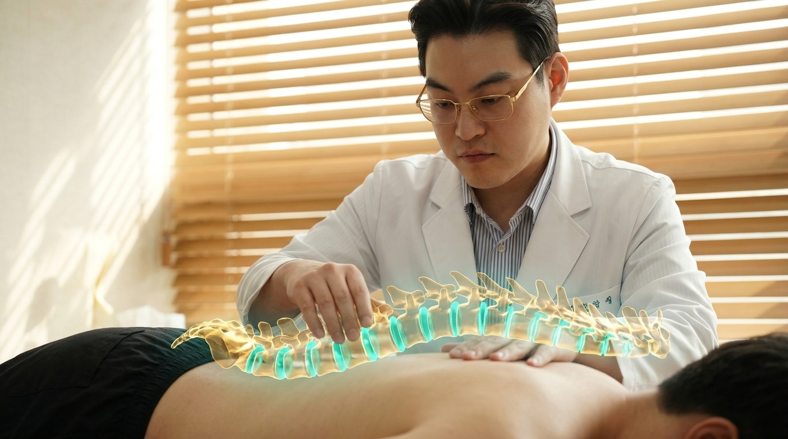

CHAPTER 01 · STRUCTURAL DECOMPRESSION
요추·흉추 추간판 감압 추나
눌려 있던 추간판(디스크)에 숨 쉴 공간을 되찾아주다
안정위 대표원장이 환자분의 척추 분절 하나하나의 변위 방향과 근막 긴장도를 손끝으로 감지하여, 어긋난 관절면을 제자리로 맞춥니다. 신경근 압박이 풀리는 순간 지긋지긋하던 방사통과 묵직함이 눈 녹듯 사라집니다.
CONSUMER EMPATHY · 왜 통증은 도미노처럼 번질까요?
“처음엔 목만 뻐근했는데,
“처음엔 목만 뻐근했는데,
어느새 어깨와 허리, 골반, 발목까지 다 아파요.”
우리 몸의 척추와 관절은 하나로 연결된 ‘생체역학적 사슬(Kinetic Chain)’입니다. 모니터를 보느라 머리가 앞으로 2cm만 빠져도 경추가 받는 하중은 최대 15~20kg까지 폭증하며, 이를 버티기 위해 어깨가 말리고 등(흉추)이 굽으며 결국 허리와 골반, 발목 관절까지 연쇄적으로 틀어집니다.
아픈 부위에만 진통 주사를 놓는 대증치료가 아닌, 무너진 도미노의 첫 번째 블록(중심축)을 찾아 바로 세우는 것이 바른 추나 클리닉의 핵심입니다.